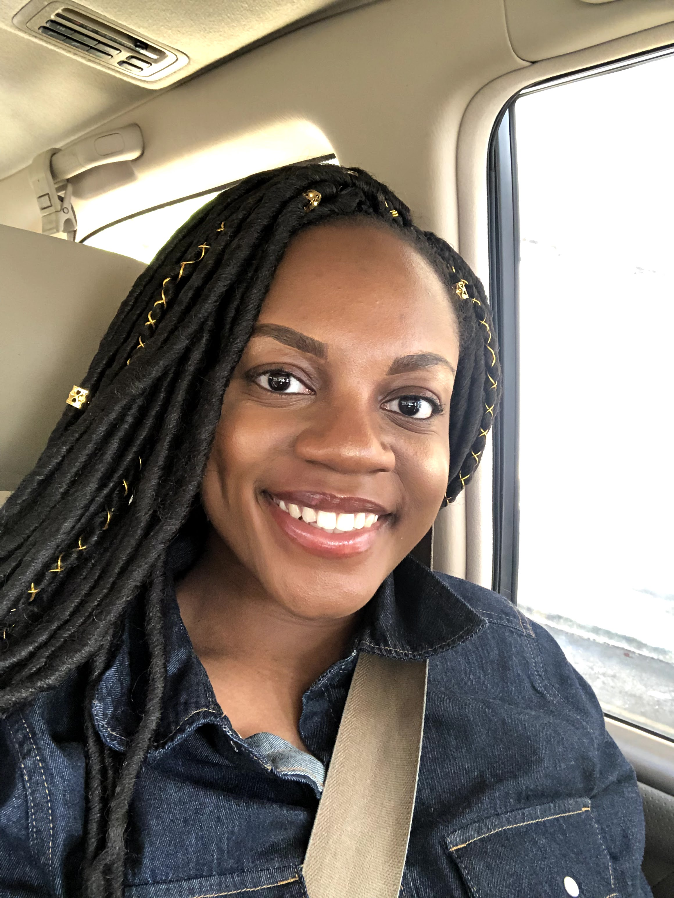

Intro: This page here is a displayment of my recent academic and career accomplishments.

EDUCATION
WORK EXPERIENCE
IBM Developer Ecosystems Group (DEG) | San Francisco, California | Intern May 2021-August 2021 (Fall 2019)
Member of eight-person, cross-functional team of developer advocates, engineering managers, and program managers that develops technology-focused initiatives to combat racial injustices
- Created a survey for interns quantify coding proficiency, familiarity with open-source projects, and inviting them to contribute to Call for Code for Racial Justice (CFCFRJ)
- Placed third out of 30 in the Bee Innovative Challenge, working with six interns to create a presentation and proposal with a data and web services solution to end hunger in Chad
- Constructed website using CSS, React, JSON in conjunction with User Interface for CFCFRJ to help users see what open-source projects they should contribute to based on responses of coding background
- Led weekly playback meetings with eight interns to recap work on CFCFRJ project
- Presented to Call for Code executives, showcasing 12-week CFCFRJ project impacts
- Led development of virtual community among interns by creating game nights about San Francisco’s history
- Drafted webpage ideas for CFCFRJ websites using CSS and HTML, displaying timeline of Black history and current events for the Black communit
Malaika | DR Congo | Youth Ambassador and Development Assistant November 2017 – Present
Representative of organization transforming lives of 5000+ women in Kalebuka, DR Congo with education and healthcare
- Inspired young girls in the Malaika School by sending 60+ articles and videos over a two-year period about exemplary women of Africa in diverse professions
- Collaborated in a team of 10 on monthly newsletters sent to 15+ donors and supporters
- Completed research on 90+ universities in the US and Africa for high school graduates
- Increased social media engagement by creating captions for posts about students with strategically chosen hashtags
LEADERSHIP
Black Students' Alliance (BSA)
Alumni Chair (February 2020)
- Reached out to recent graduates to update alumni contact list to gain $5000+ of future funding and speakers for semester events
- Maintained relationships with 250+ alumni which encourages attendance to large-scale BSA events including the Ebony Ball and BSA Fashion Show
- Designed monthly newsletter to advertise, promote, and showcase BSA events to alumni
Events Manager (August 2020-present)
- Created new collaborative BSA events to celebrate Black history and culture, increasing engagement of 30+ general body
- Revamped general body meetings to include culturally relevant topics such as the history of Black hairstyles, Black protests, and Black cuisines
National Society of Black Engineers (NSBE) Club Member (August 2019-present)